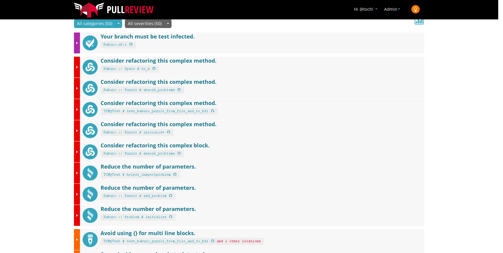

Christophe Philemotte, BRUG 5 Nov 2013
x = false
x = 3
x = 'this is a string'
x = '3'
x = x + 3
# TypeError: no implicit conversion of Fixnum into String
class Duck
def quack
puts 'Quaaaaaack!'
end
end
class Person
def quack
puts 'The person imitates a duck.'
end
end
donald = Duck.new
john = Person.new
duck.quack
john.quack
# Quaaaaaack!
# The person imitates a duck.
from Wikipedia
class Fixnum
alias_method :old_plus, :+
def new_plus(other)
return self.to_s + other if other.kind_of? String
self.old_plus(other)
end
alias_method :+, :new_plus
end
x = '3'
y = 3 + x
Meaningfull
Concise
Flexible
Contract Based
Easy DCI
Error Only at Runtime
No Static Interface
You shouldn’t care of the type, but …
Obscure Magic
Writing Tests
Code Review
Automation
Check the Contract and the User Story
Reliable Changes through Time
Documentation of the Code
Guards against Regression and Edge Cases
Speed the dev Cycle
Comparing [TDD] to the non-test-driven development approach, you’re replacing
all the mental checking and debugger stepping with code that verifies that
your program does exactly what you intended it to do.
(Noel 2005)
Test:Unit
MiniTest
Rspec
Cucumber
Jenkins
Travis
CodeShip
Semapore
Knowledge Sharing
Mutual Education in the Team
Bug Detection before Shipping
Readability and Consistency Improvement
CoOwnership Reinforcement
Shorter Dev/Test Cycles
Rigorous inspections can remove 60-90% of errors before the first test is run.
(Fagan 1975)
60% of all issues raised in the code inspections are not problems that could
have been uncovered by latter phases of testing or field usage because they
have little or nothing to do with the visible execution behavior of the
software.
(H. Siy and L. Votta 2001)
Industry data indicates that code reviews can accomplish at most an 85% defect
removal rate with an average rate of about 65%.
(Capers Jones 2008)
Code review would have saved half the cost of fixing the bugs.
(Best Kept Secrets of Peer Code Review 2013)
GitHub PullRequest
Gerrit
Collaborator
Crucible
Short Feedback Time
None Emotional Influences
Tracking Progress
Reproducible, Invariable
Don’t Waste Peer Time
Automation is necessary. It is common to take a sort of smug satisfaction in
reports of colossal failures of automatic systems, but for every failure of
automation, the failures of humans are legion. Exhortations to “write better
code” plans for more code reviews, pair programming, and so on just don’t cut
it, especially in an environment with dozens of programmers under a lot of
time pressure. The value in catching even the small subset of errors that are
tractable to static analysis every single time is huge.
John Carmack, 2011
Ruby Warning (Linter)
Flog (Complexity)
Flay (Duplication)
Excellent (a Medley)
Rails Best Practices (specific to Rails)
Brakeman (Security)
Rubocop (Style and Linter)
Yard (Documentation)
CodeClimate
PullReview
